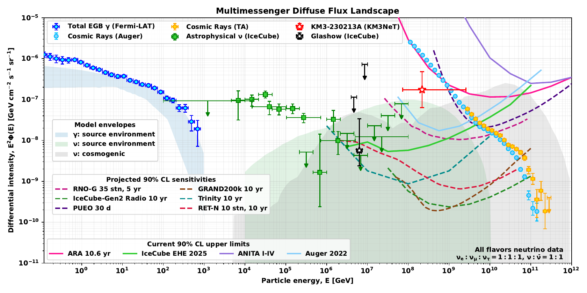

Open-Source Scientific Software · 2026–Present
MAHAM
Modules for Astroparticle, High-energy, Astronomy and Multimessenger
Reusable, validated, and citable scientific methods and data products for astroparticle physics, high-energy astrophysics, astronomy, and multimessenger research. Current development includes neutrino spectra and models, experimental limits and sensitivities, detector-response calculations, statistical methods, and reproducible literature datasets.
